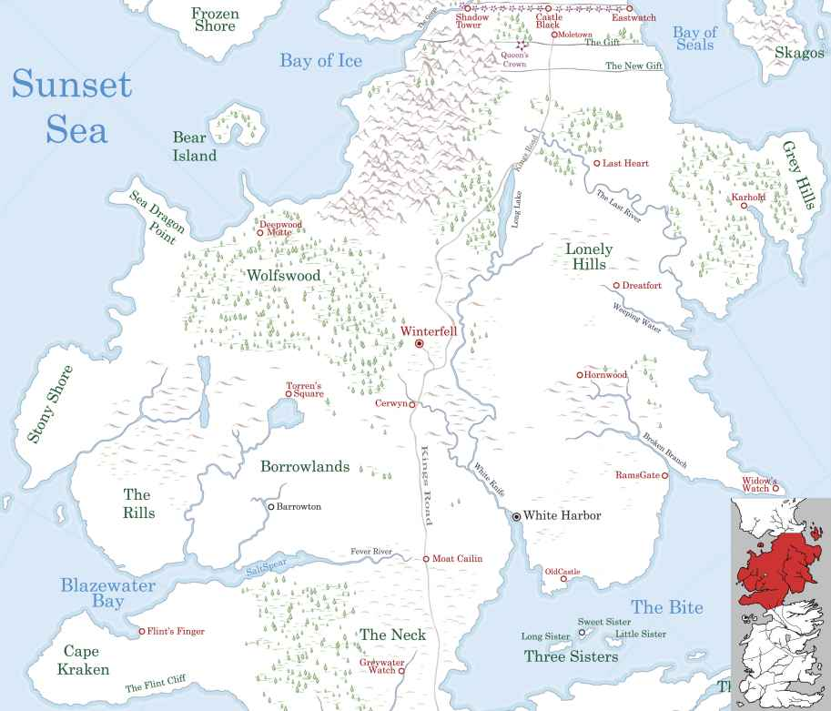

Moat Cailin
Moat Cailin is ancient fortress on the northern edge of the great swamp known as the Neck, in the North. It is one of the North’s most important strongholds, even though much of it now stands in ruins. Its importance stems from the fact that it commands the causeway, which is the safe route for armies to travel through the swamps of the Neck. It is a very effective natural choke point which has protected the North from southern invasion for thousands of years. The only way for an invader to effective bypass Moat Cailin is to win the allegiance of the Reeds who know of other routes through the swamps. Those are not on any map, known only to the Crannogmen, such as narrow trails between the bogs and wet roads through the reeds that only boats can follow and given the Reeds’ strong ancestral ties to the Starks, this is unlikely to happen.
Map on Next page.
